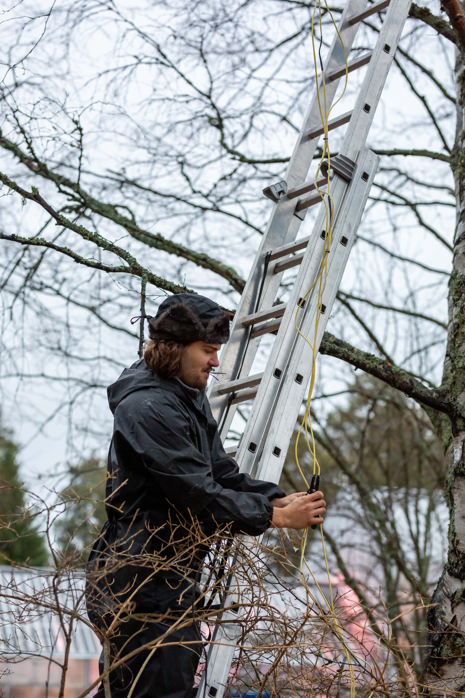

Luminarium is a light art studio founded and directed by artist and architect Janez Grošelj. Inspired by the wonders of nature, the aim of the studio is to expose often-overlooked elements and transform everyday environments into mesmerizing experiences with the aim to enhance perception and forge a deeper emotional connection to the environments we inhabit.
Based in Slovenia, the studio operates as a collaborative hub. Janez's artistic vision is brought to life by a core team of experienced technicians and a network of diverse artistic partners. This structure allows a turn-key deliverance of astonishing experiences at any scale, anywhere in the world.
Luminarium's installations have been showcased at numerous prestigious international festivals. We are proud to have been a part of:
The work extends beyond creating and exhibiting temporary installations, offering comprehensive solutions to illuminate spaces with impactful light art experiences.
Festival Curation & Organization: A turn-key service for cities and clients, managing the artistic and technical aspects of organizing entire light festivals.
Plans for the future: Collectible Design: In development is a line of limited-edition light artworks, translating the vision of the large-scale works into a more intimate format.
For inquiries, collaborations, or just to share your thoughts, please reach out at info@luminarium.cc.